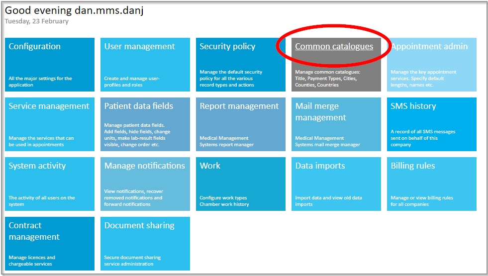
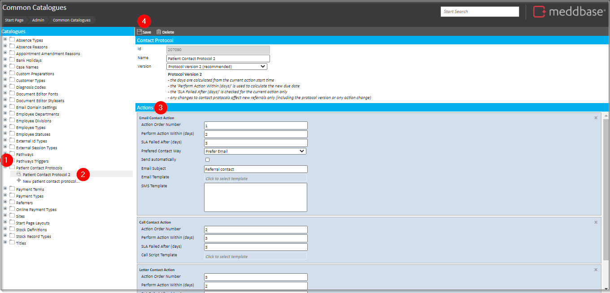

This article outlines what the Patient Contact Protocol does and how you can update it.
The Patient Contact Protocol guides the business user to take specific time-driven actions in order to contact the referred employee for an incoming Occupational Health referral.
The Patient Contact Protocol itself can be configured to define:-
This feature is optional. If no custom protocol is created, Meddbase users are still prompted to contact the referred employee.
The Patient Contact Protocol is used in the Referral Contact Protocol for a Portal Referral Rule.
To do this from the Meddbase Start Page:-

From the Common Catalogues display:-

A notification is presented that the Patient Contact Protocol has been saved.
Within the Actions panel, there is a range of fields that impact the contact protocol behaviour. These are explained in outline below.
| Field | What it does |
Action Order Number
| Defines the order in which the different types of contact actions for an incoming Occupational Health referral will be applied. |
Perform Action within (days)
| Defines the number of days from referral receipt within which the proposed action should be taken. |
SLA Failed After (days)
| Defines the number of days from receiving the referral up to making the booking before which an SLA has been breached. |
Preferred Contact Way
| Defines the proposed contact method (either email or SMS). |
Send automatically
| Defines whether the message is sent automatically. |
Email Subject
| Then subject line used by default where sending an email. |
SMS Template
| The default SMS template context used where sending an SMS message. |
Call Script template
| The template used for the ‘Call Contact Action’. |
Letter Template
| The template used when writing a letter. |
There are 2 versions of the Protocol that are available. Their key characteristics are summarised below.
It is recommended to use version 2 of the protocol.